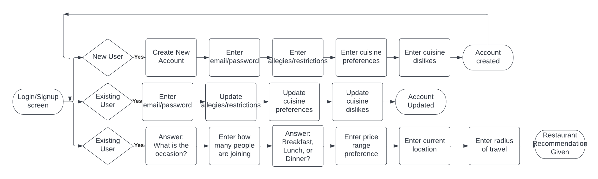
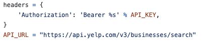
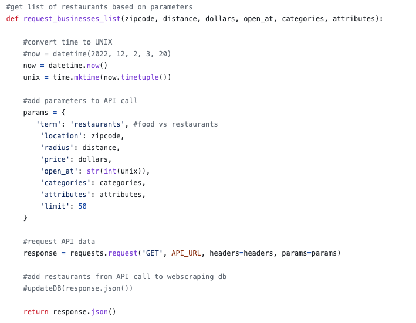
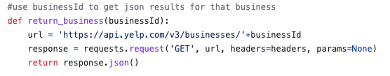
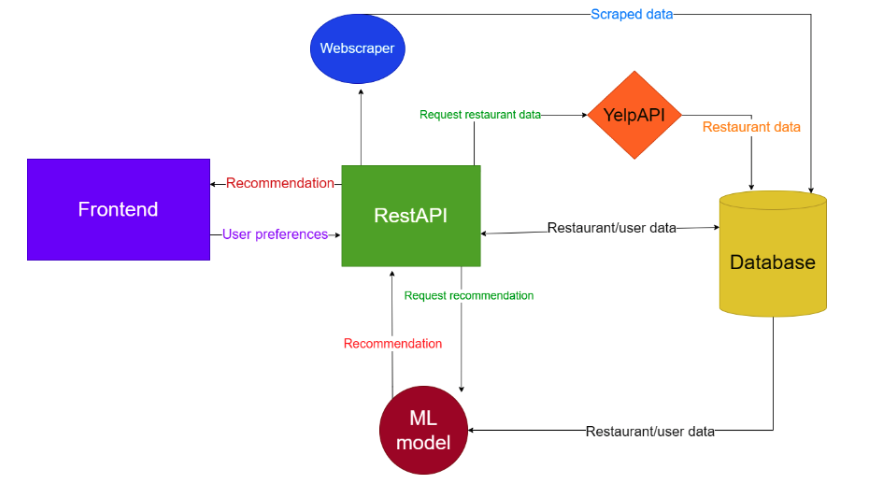

Overview
Summary
Our product, LetsEat, is a restaurant recommendation application that aims to provide personalized recommendations to users based on food preferences and various questions about the occasion on which the user is going to eat. By using a machine learning model, this recommendation system will provide users with restaurants that have been good matches for similar users in the past. In short, users will receive the best possible restaurant recommendation given their preferences and circumstances. Instead of scrolling through a seemingly endless supply of restaurants on Yelp or OpenTable, this application will give a single restaurant that best fits the situation and group of people. Whenever going out to eat by yourself, it can feel like you are eating at the same places and may want to try something new. Likewise, when eating with other people, it can be a nuisance to accommodate everyone’s preferences when trying to find somewhere to eat. It can also be overwhelming depending on the occasion that you’re going out to eat; whether it be going out with friends or taking clients out. This is especially true when living in an area that has a wide choice of restaurants. Given the amount of options an individual has to consider when choosing a place to eat, it can be overwhelming and many people will choose to go somewhere that they are comfortable with instead of trying somewhere new.
Customer
This product can be beneficial for many kinds of users. The development will focus on young adults, who frequently dine at restaurants in groups, such as on dates or with friends. In these situations, the group collectively decides on where to dine. The application will also benefit professionals who want to take out clients, and families who dine out together. The target customers are such residents and inhabitants of Washington, DC, because the city has many restaurant options. For these listed circumstances, a decision must be made for the group, and the ambiance differs. Our application takes this information into account to give the user the best restaurant for the situation, making the decision process easier for the user.
Value Proposition
There are already applications on the market that allow users to research restaurants, such as Yelp, OpenTable, and Resy. However, our application differs from these products. These products have a similar user experience, where they allow the user to enter a very limited number of search terms and the user must scroll through the many options to decide where to dine. Our product is unique because it is not a search engine for restaurants. It takes a few answers from the user and outputs the one restaurant that is best for that user and their scenario. The key differentiators for LetsEat would be the simplicity of the application, the quickness of the recommendation, and the personalized results. Unlike other restaurant apps that allow for basic filtering, this application takes into account the more human element of user and restaurant pairings that can’t be captured through simple cuisine preferences. We hope to capture and relate the atmosphere of restaurants to the particular circumstances of each use case.
Innovation
The innovative aspects of LetsEat lie in the single recommendation provided to the user as opposed to the list of restaurants in arbitrary order seen in current applications. The use of machine learning further separates LetsEat from the current market solutions as it will grow smarter over time as more user data is gathered, which in turn will lead to even better recommendations. Essentially, the application can only grow smarter, better, and more personalized as time passes. The use of sentiment analysis on existing reviews of restaurants will allow the application to build profiles on both users and restaurants, further strengthening the underlying data and allowing for more sophisticated pairings that don’t just rely on static data like cuisine, location, and price.
Broader Societal Impact
We think LetsEat will have a great impact on people’s lives as it will reduce the stress and time involved in choosing a restaurant. LetsEat will also hopefully widen the pool of restaurants that people are accustomed to going to and allow people to try places they may have never before. Our hope is for LetsEat to become a staple in people’s inventory for choosing places to eat.
Use Cases
User Stories
- As a new user, I would like to be able to create an account quickly so that I can get started on using the app as soon as possible.
- As a new user, I would like the application to be as intuitive and easy to use as possible so that I am not confused as to how to navigate it.
- As a new user, I would like my initial restaurant suggestions to be relevant for me so that I feel the application is worth my time.
- As a returning user, I would like to be able to alter my profile settings easily and quickly such as cuisine preferences or dietary restrictions so that future restaurant suggestions are more accurate.
- As a returning user, I would like to be able to update account settings such as my email address or password so that I can always have access to my account.
- As a returning user, I would like to see suggestions improve over time so that I feel that the application is becoming personalized to me.
- As a returning user, I would like for the questions that the application asks me everytime I use it to be relevant and important for the eventual restaurant I’d like to attend.
- As a returning user, I would like to get suggestions for restaurants I wouldn’t normally think about going to so that I can have new experiences.
- As a user in general, I would like for the suggested restaurants to fit my dietary restrictions and not offer restaurants that are incompatible with my diet or lifestyle.
Flow Diagram

Mockups/Wireframes
Alpha Demo
API UX - Yelp Fusion
Below is the header for authentication to access the API.

Below is the function call that accepts user inputs and does API call to get the top 50 restaurant results that match the parameters.

Below is the function that accepts a business ID and does an API call to return the specifics of that restaurant.

Technical Components
System Diagram

External APIs and Frameworks
Frontend
REACT
REACT is the frontend framework used to build the web application for our project. This framework allows for intuitive and dynamic front facing web pages that can change based on user input and the device the user is utilizing to access the web application. REACT was chosen for its ease of use and simplicity; allowing for development of a website that can be simple to use and navigate.
Backend
FastAPI
This API allows for the infrastructure and setup of the web server for our project. By using this API, prebuilt HTTPS functions can be used to set up API endpoints that the frontend application can ping to send/receive information quickly. FastAPI is just that, fast, and works particularly well with machine learning models so it is a perfect fit for our project which utilizes machine learning to make suggestions.
Yelp Fusion API
This API gives access to relevant information about restaurants. After the user inputs their dining preferences, data like location, distance, and price range. The API will return the top most relevant 50 or less restaurants and data about them, such as their yelp website, cuisine types, and location. The outputted website will then be scraped to get more information about the restaurant. These restaurants and their data will then go to the machine learning algorithm. This API was chosen because it has the most extensive, detailed list of restaurants and is free to use.
Selenium Webdriver
This framework is used to collect the necessary data to be fed to the machine learning algorithm. The data collection occurs in development, not during user interactions. Using the json data from an API call, Selenium opens a Chrome browser to that restaurant’s Yelp webpage. Selenium searches for predefined keywords on that webpage and updates our restaurant database to indicate whether keywords were found. This helps to determine the atmosphere of the website. The Selenium Webdriver also searches the reviews for each restaurant. The search terms include the occasions and allergies a user can enter. The webdriver finds reviews with those keywords, then does sentiment analysis (see Vader) on the review to determine if the user would return to the restaurant. This information is stored in a database and used as training data for the machine learning algorithm.
Vader Sentiment Analysis
The reviews that are scraped (see above) are analyzed and receive a score. This score determines whether the user would return to the restaurant, based on keywords.
Machine Learning
XGBoost
XGBoost is used to import the decision tree portion of our machine learning algorithm. This API allows for easy setup and use of machine learning models by having them prebuilt and ready to go after import. All that needs to be done once the model is imported is to load it in and fit it with the correct data formatted and encoded. XGBoost was picked for the decision tree model due to its efficiency and speed in training/returning predictions based on user input.
Algorithms
Machine Learning Algorithm
Train model on combination of made up data and scraped real data in order to give a recommendation that is consistent with individual user preferences and other user recommendations. The algorithm works by first having data compiled by the web scraper and data randomizer to train the model on. This provides a basis for the model to make recommendations as it can refer to assumptions made during training. Once the model is trained, the choices and preferences a user makes are sent into the model. The model compares these preferences to similar users who have similar preferences as well as other restaurants with characteristics that match their preferences. The model will find the restaurants that best fit the characteristics associated with the user and return a list of these restaurants. The top choice is returned to the user as a recommendation, with the rest of the list being additional choices that will be presented if the user rerolls the recommendation, so that computing time is saved.
Web Scraping with Selenium Webdriver
To get the necessary data for the machine learning algorithm, we must scrape the web to get more information about each restaurant and to also generate fake users for training the model. Success in web scraping includes fully populated databases including the relevant information about each restaurant and users for each restaurant. Using Selenium Webdriver, data collection occurs during development. Selenium opens a Chrome browser to the Yelp page of a restaurant, searches for predefined atmospheric adjectives, and updates the database to include this information about the restaurant. Then, Selenium searches the reviews of that restaurant for keywords about dining occasions and allergies. Sentiment Analysis is done on the review to determine if the restaurant is suitable for that keyword. The database is updated accordingly. These databases are used to train the model and make predictions at runtime.
Costs
The development cost in terms of hardware is none, as our project and the backend component specifically are entirely software-based. For the software side, the expectation is that a working machine learning model will be ready to deliver suggestions with relatively-low confidence scores by the end of December. After that, it may take an additional 1-2 months to fully refine the machine learning and web server code so that it is optimized and running as quickly as possible. In terms of lines of code, the estimation for the entire project would likely be in the 700-800 range due to the amount of code needed for the frontend, while the web server and machine learning side would be closer to 300-400 because that code is more concise.